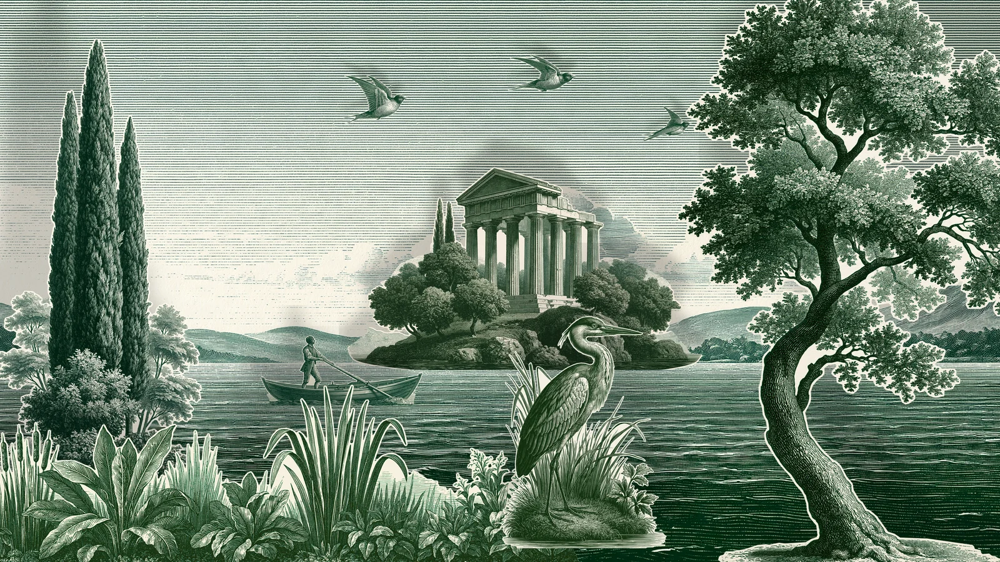

For most of the nineteenth century a London child with a penny could buy a sheet of a play. Printers off the Strand and in Hoxton engraved the scenes and the characters of the pantomimes and melodramas then on at Covent Garden and Drury Lane, and sold them a penny plain, twopence coloured. You cut them out, pasted them onto card, and set them up in a theatre of wood and paper on the kitchen table.
The stage worked like the real one. The backcloth hung at the back. The wings stood in grooves down each side, one pair behind another, so the scene seemed to go back further than the table did. A ground row stood across the front to hide the floor, and the characters came on from the wings at the end of a wire.

Light came from the front, from a row of small oil lamps or candles in a tin trough along the edge of the stage, and it did what footlights do. Each cut-out threw its shadow up and back onto whatever stood behind it, a little larger than itself, and the nearer it stood to the lamps the larger its shadow was.
Robert Louis Stevenson wrote about the sheets in 1884, in an essay called A Penny Plain and Twopence Coloured, long after the shop where he had bought them as a boy in Edinburgh. What he remembered best was not the plays but the sheets themselves, and the buying of them.